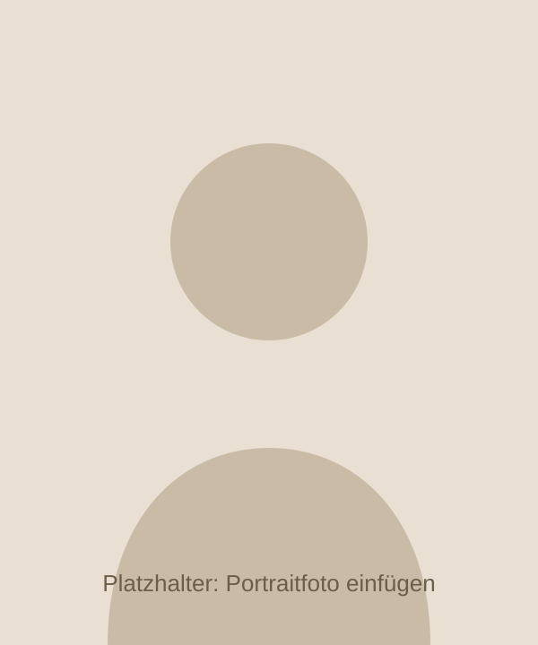

Über mich
Timo Winheller – Neuro-Resonanz-Practitioner, Coach, und jemand, der Druck aus eigener Erfahrung kennt.

Denys Scharnweber Akademie, [JAHR]
Practitioner-Status nach DVNLP-Richtlinien
130+ Stunden, schriftliche und mündliche Prüfung
Platzhalter: Hier kann ein Scan des Zertifikats eingebunden werden (img/zertifikat.jpg).
Mein Weg
[Kurzbiografie: Wo kommst du her, was hast du beruflich gemacht, was hat dich zum Coaching gebracht? 3–5 Sätze.]
Über Jahre habe ich als aktiver Trader an den Finanzmärkten gearbeitet. Kaum ein Umfeld zeigt so schonungslos, wie sehr Angst, Gier, Ungeduld und alte Glaubenssätze Entscheidungen steuern – und wie wenig Wissen allein dagegen hilft. Ich hatte Regelwerke, Statistiken, Pläne. Und ich habe sie trotzdem gebrochen, wenn der Druck groß genug war.
Der Wendepunkt kam, als ich verstanden habe, dass das Problem nicht im Wissen lag, sondern in automatischen Mustern. Ich habe angefangen, an diesen Mustern zu arbeiten – zuerst bei mir selbst, dann in der Ausbildung zum Neuro-Resonanz-Practitioner bei Denys Scharnweber, dessen Arbeit mich schon lange begleitet hat.
Heute arbeite ich mit Menschen, die in ihrem Bereich leistungsfähig sind und trotzdem merken: Da bremst etwas. Manchmal ist das der Kopf, oft der Körper, meistens beides.
Wie ich arbeite
- Auf Augenhöhe. Du bist Expertin oder Experte für dein Leben. Ich bringe Methoden und einen klaren Blick von außen.
- Klartext. Ich sage, was ich sehe – auch wenn es unbequem ist. Und ich sage dir, wenn ich glaube, dass du woanders besser aufgehoben bist.
- Ergebnisorientiert. Jede Sitzung hat ein Ziel. Wenn sich nach drei Sitzungen nichts verändert, ändern wir das Vorgehen.
- Vertraulich. Was im Coaching besprochen wird, bleibt dort. Ohne Ausnahme.
Ausbildung & Hintergrund
- Neuro-Resonanz-Practitioner, Denys Scharnweber Akademie ([JAHR])
- [Weitere Ausbildungen, Seminare, Studium – oder Zeile löschen]
- Mehrjährige Erfahrung im Trading und mit Entscheidungen unter Unsicherheit
- Laufende Weiterbildung in NLP, Emotionscoaching und Körperarbeit
Lernen wir uns kennen.
30 Minuten, kostenlos, online. Danach weißt du, ob es passt.
Erstgespräch vereinbaren